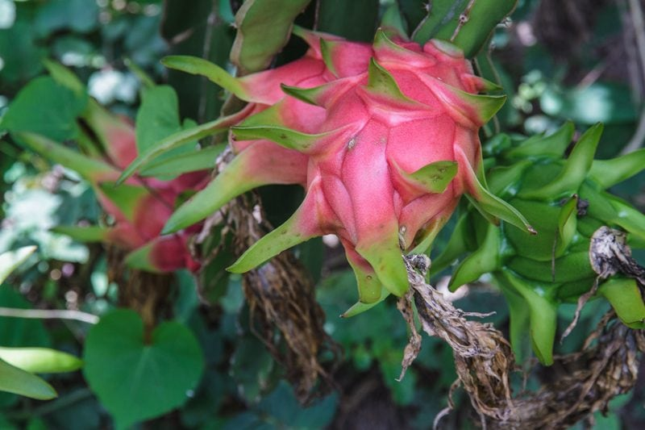
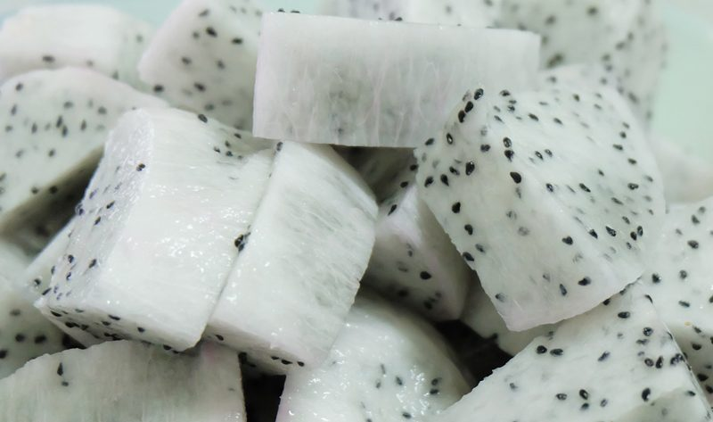

Dragon Fruit – Queen of the Night
There is a uniqueness to this gorgeous tropical fruit, and that is it lives only one night. First, the cactus produces a beautiful pink or yellow flower. Sometimes called “moonflower” or “Queen of the night,” the plant blooms from evening to midnight, only to wither in strong sunlight. During the night, the pungent flowers are pollinated by moths and bats. Although the flower dies, the cactus bears dragon fruit (pitaya) about six times every year.

Some dragon fruits have red or yellow skin (which looks a little like a soft pineapple with spikes) and white or red flesh, but always the beginnings of overlaid leaves, similar to an artichoke, and an abundance of small, black, edible seeds. Dragon fruit is a relatively long-lived perennial. It can produce its first fruits within one year of its establishment, and it can continue to fruit annually for twenty to thirty years before it begins to decline.
Health Benefits
- Dragon fruits have a surprising number of phytonutrients.
- Rich in antioxidants, they contain vitamin C, polyunsaturated (good) fatty acids, and several B vitamins for carbohydrate metabolism, as well as carotene and protein.
- Dragon fruits have zero complex carbohydrates, so foods can be more easily broken down in the body, helped by vitamin B1 (thiamin) and other B vitamins.
- The oil in the seed operates as a mild laxative.
How to Select and Store
Visual Inspection
- Look for a dragon fruit that has bright, evenly colored skin.
- If it has too many brown blotches, or if it has a dry, shriveled stem, it’s probably overripe.
- A green color dragon fruit is not ripe.
- Once the dragon fruit has reached the stage of ripeness, the leaf tips start to wither. Don’t confuse this with brittle or shriveled leaves which are a sign of being overripe.
- When ripe, the inside of a dragon fruit should appear juicy yet firm in texture: like a cross between a melon and a pear. When a dragon fruit is overripe, the inner flesh will turn brown, similar to the bruised flesh of a banana. You should not eat fruit that is brown or dried out.
Sweet Aroma
- Smell the dragon fruit, looking for a light and tropical aroma. This is a sign that the flesh inside will be ripe and sweet.
Under Pressure
- If the fruit is very firm, let it ripen a few days until the flesh gives slightly.
- Touch the stem of the dragon fruit. A brittle stem denotes an overripe fruit, so look for a stem with slight pliancy.
- Press your finger into the skin of the dragon fruit. A perfectly ripe fruit will give slightly to the pressure, much like a ripe avocado or mango. Only use this method if you are growing and harvesting your own dragon fruit. Squeezing a dragon fruit can leave the fruit bruised, which is inconsiderate to vendors and other customers in a store or market setting.

Culinary Experience
- Dragon fruits have a crisp, watery white flesh dotted with crunchy black seeds.
- The flavor is mildly sweet, like a blend of kiwifruit and pear, and it has a crunchy texture.
- Slice lengthwise and either scoop out the flesh or quarter it and peel back the leathery skin.
- Eat only the white part with seeds removing any residual pink parts, which are bitter.
- Dragon fruit is popular to use when decorating a salad or smoothie bowl. Use a melon baller to create artful dragon fruit balls.
© AmieSue.com